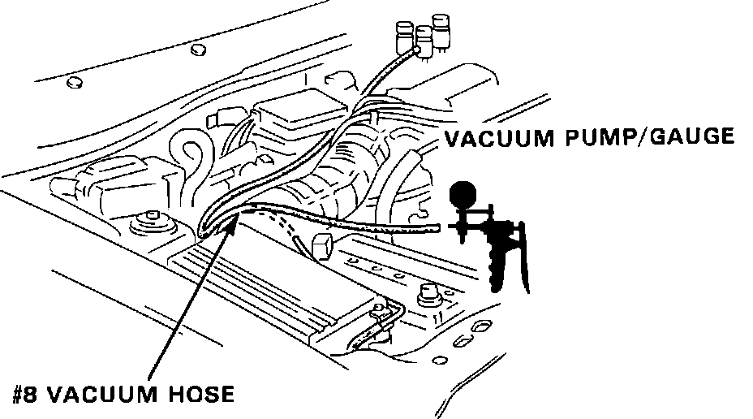
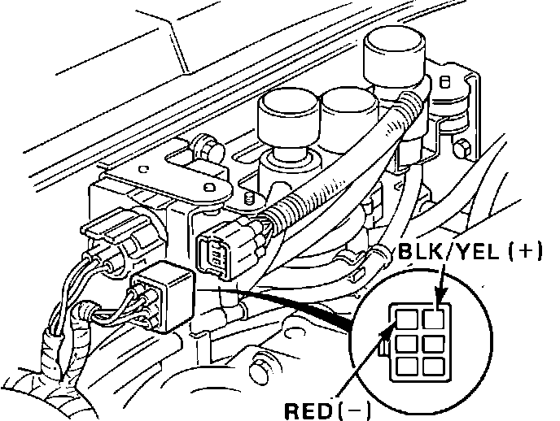
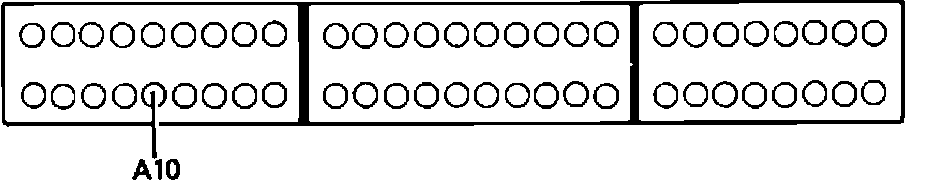
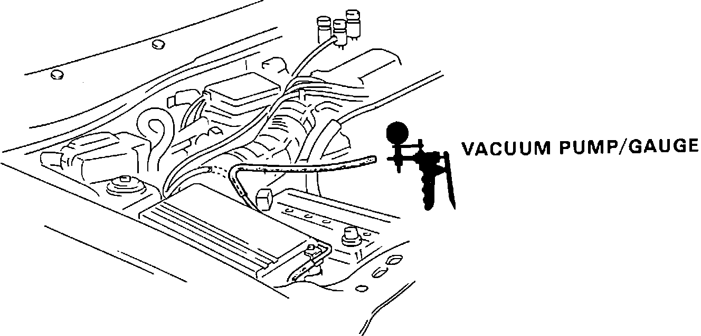

Resonator System
Resonator Control System Testing:

1. Disconnect hose #8 from the vacuum manifold as shown, and connect vacuum pump to hose.
2. Start and idle engine.
3. Observe vacuum gauge.
Vacuum, proceed to step 16.
No vacuum, proceed to next step.
4. Connect vacuum pump to lower port of resonator solenoid at firewall.
5. Observe vacuum gauge.
Vacuum, proceed to step 7.
No vacuum, proceed to next step.
6. Check connecting vacuum hoses for blockage or damage. Repair as required. End of test.
Resonator Control System Testing:

7. Disconnect 6 wire connector for resonator solenoid at firewall.
8. Measure voltage between BLK/YEL and RED terminals of harness connector.
Battery voltage, replace solenoid. End of test.
No battery voltage, proceed to next step.
9. Measure voltage between BLK/YEL wire and ground.
Battery voltage, proceed to step 11.
No battery voltage, proceed to next step.
10. Repair open BLK/YEL wire between 6 wire connector and #4 fuse in underdash fuse box. End of test.
11. Turn ignition off.
12. Install test harness between ECU and connector. If test harness is not available, carefully backprobe wires at ECU connector.
Resonator Control System Testing:

13. Check for continuity of RED wire between ECU terminal A10 and 6 wire connector.
Continuity, proceed to step 15.
No continuity, proceed to next step.
14. Repair open RED wire between ECU terminal A10 and 6 wire connector. End of test.
15. Replace electronic control unit. End of test.
16. Raise engine speed to 3000 rpm and observe gauge.
Vacuum, proceed to step 19.
No vacuum, proceed to next step.
Resonator Control System Testing:

17. Connect vacuum pump as shown and apply vacuum.
Holds vacuum, proceed to next step.
Does not hold vacuum, replace resonator diaphragm. End of test.
18. Resonator system functional, no further testing required.
Resonator Control System Testing:
19. Disconnect 6 wire connector from resonator solenoid at firewall.
20. Observe vacuum gauge.
Vacuum, replace solenoid. End of test.
No vacuum, proceed to next step.
21. Turn ignition off.
22. Disconnect ECU connector A from ECU.
23. Check ECU terminal A10 for continuity to ground.
Continuity, proceed to next step.
No continuity, proceed to step 25.
24. Repair short to ground on RED wire between ECU terminal A10 and 6 wire connector. End of test.
25. Replace electronic control unit.